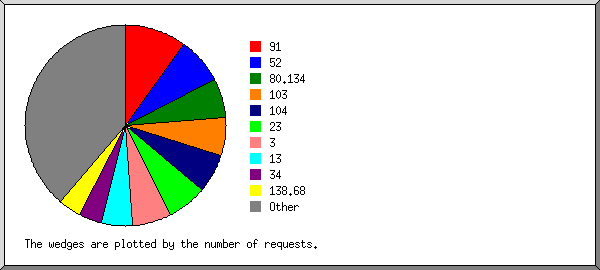
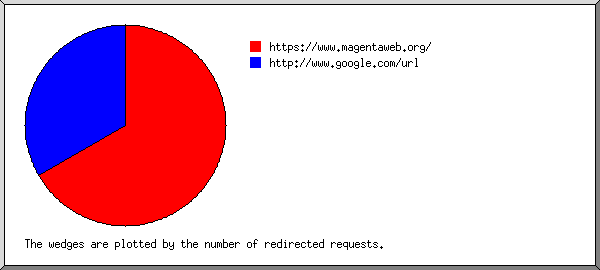
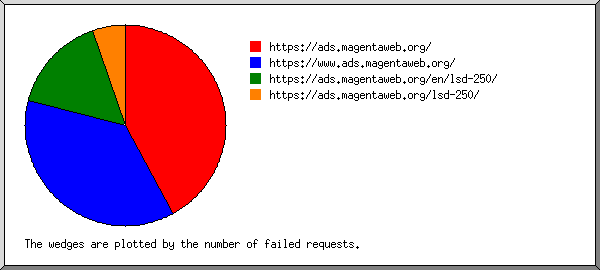
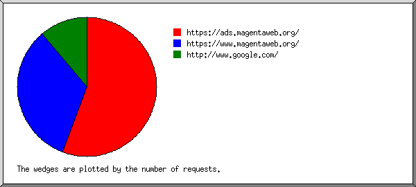
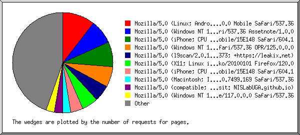
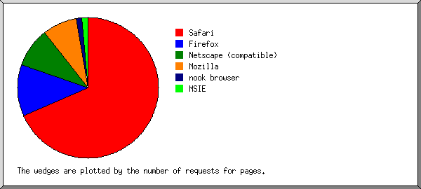
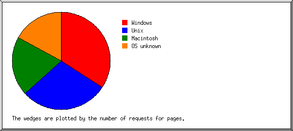
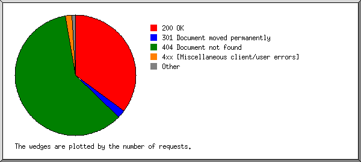
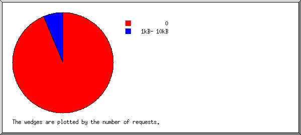
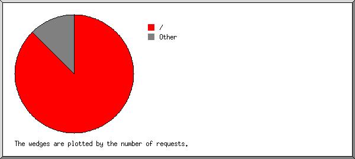

Web Server Statistics for ads.magentaweb.org
Web Server Statistics for ads.magentaweb.org
Program started on Sun, Dec 28 2025 at 7:03 AM.
Analyzed requests from Sat, Dec 27 2025 at 4:24 AM to Sun, Dec 28 2025 at 6:37 AM (1.09 days).
Web Server Statistics for ads.magentaweb.orgProgram started on Sun, Dec 28 2025 at 7:03 AM.
Analyzed requests from Sat, Dec 27 2025 at 4:24 AM to Sun, Dec 28 2025 at 6:37 AM (1.09 days).
(Go To: Top | General Summary | Monthly Report | Daily Summary | Hourly Summary | Domain Report | Organization Report | Redirected Referrer Report | Failed Referrer Report | Referring Site Report | Browser Report | Browser Summary | Operating System Report | Status Code Report | File Size Report | File Type Report | Directory Report | Request Report)
Successful requests: 80
Average successful requests per day: 72
Successful requests for pages: 80
Average successful requests for pages per day: 72
Failed requests: 143
Redirected requests: 5
Distinct files requested: 6
Distinct hosts served: 48
Data transferred: 6.94 kilobytes
Average data transferred per day: 6.35 kilobytes
(Go To: Top | General Summary | Monthly Report | Daily Summary | Hourly Summary | Domain Report | Organization Report | Redirected Referrer Report | Failed Referrer Report | Referring Site Report | Browser Report | Browser Summary | Operating System Report | Status Code Report | File Size Report | File Type Report | Directory Report | Request Report)
Each unit ( ) represents 2 requests for pages or part thereof.
) represents 2 requests for pages or part thereof.
| month | #reqs | #pages | |
|---|---|---|---|
| Dec 2025 | 80 | 80 |   |
Busiest month: Dec 2025 (80 requests for pages).
(Go To: Top | General Summary | Monthly Report | Daily Summary | Hourly Summary | Domain Report | Organization Report | Redirected Referrer Report | Failed Referrer Report | Referring Site Report | Browser Report | Browser Summary | Operating System Report | Status Code Report | File Size Report | File Type Report | Directory Report | Request Report)
Each unit () represents 2 requests for pages or part thereof.
| day | #reqs | #pages | |
|---|---|---|---|
| Sun | 8 | 8 |  |
| Mon | 0 | 0 | |
| Tue | 0 | 0 | |
| Wed | 0 | 0 | |
| Thu | 0 | 0 | |
| Fri | 0 | 0 | |
| Sat | 72 | 72 | |
(Go To: Top | General Summary | Monthly Report | Daily Summary | Hourly Summary | Domain Report | Organization Report | Redirected Referrer Report | Failed Referrer Report | Referring Site Report | Browser Report | Browser Summary | Operating System Report | Status Code Report | File Size Report | File Type Report | Directory Report | Request Report)
Each unit () represents 1 request for a page.
| hour | #reqs | #pages | |
|---|---|---|---|
| 0 | 0 | 0 | |
| 1 | 2 | 2 |  |
| 2 | 1 | 1 | |
| 3 | 1 | 1 | |
| 4 | 12 | 12 | |
| 5 | 4 | 4 | |
| 6 | 7 | 7 | |
| 7 | 19 | 19 |  |
| 8 | 5 | 5 | |
| 9 | 4 | 4 | |
| 10 | 4 | 4 | |
| 11 | 7 | 7 | |
| 12 | 5 | 5 | |
| 13 | 2 | 2 | |
| 14 | 0 | 0 | |
| 15 | 0 | 0 | |
| 16 | 0 | 0 | |
| 17 | 2 | 2 | |
| 18 | 0 | 0 | |
| 19 | 0 | 0 | |
| 20 | 0 | 0 | |
| 21 | 1 | 1 | |
| 22 | 0 | 0 | |
| 23 | 4 | 4 | |
(Go To: Top | General Summary | Monthly Report | Daily Summary | Hourly Summary | Domain Report | Organization Report | Redirected Referrer Report | Failed Referrer Report | Referring Site Report | Browser Report | Browser Summary | Operating System Report | Status Code Report | File Size Report | File Type Report | Directory Report | Request Report)
Listing domains, sorted by the amount of traffic.
| #reqs | %bytes | domain |
|---|---|---|
| 80 | 100% | [unresolved numerical addresses] |
(Go To: Top | General Summary | Monthly Report | Daily Summary | Hourly Summary | Domain Report | Organization Report | Redirected Referrer Report | Failed Referrer Report | Referring Site Report | Browser Report | Browser Summary | Operating System Report | Status Code Report | File Size Report | File Type Report | Directory Report | Request Report)

Listing the top 20 organizations by the number of requests, sorted by the number of requests.
| #reqs | %bytes | organization |
|---|---|---|
| 8 | 91 | |
| 6 | 52 | |
| 5 | 20.00% | 80.134 |
| 5 | 103 | |
| 5 | 104 | |
| 5 | 23 | |
| 5 | 3 | |
| 4 | 13 | |
| 3 | 34 | |
| 3 | 138.68 | |
| 3 | 20.00% | 87 |
| 3 | 164.90 | |
| 2 | 128.192 | |
| 2 | 16 | |
| 2 | 35 | |
| 2 | 54 | |
| 2 | 216.73 | |
| 2 | 162.142 | |
| 2 | 44 | |
| 1 | 20.00% | 141.138 |
| 10 | 40.00% | [not listed: 10 organizations] |
(Go To: Top | General Summary | Monthly Report | Daily Summary | Hourly Summary | Domain Report | Organization Report | Redirected Referrer Report | Failed Referrer Report | Referring Site Report | Browser Report | Browser Summary | Operating System Report | Status Code Report | File Size Report | File Type Report | Directory Report | Request Report)

Listing referring URLs, sorted by the number of redirected requests.
| #reqs | URL |
|---|---|
| 2 | https://www.magentaweb.org/ |
| 1 | http://www.google.com/url |
(Go To: Top | General Summary | Monthly Report | Daily Summary | Hourly Summary | Domain Report | Organization Report | Redirected Referrer Report | Failed Referrer Report | Referring Site Report | Browser Report | Browser Summary | Operating System Report | Status Code Report | File Size Report | File Type Report | Directory Report | Request Report)

Listing referring URLs, sorted by the number of failed requests.
| #reqs | URL |
|---|---|
| 8 | https://ads.magentaweb.org/ |
| 7 | https://www.ads.magentaweb.org/ |
| 3 | https://ads.magentaweb.org/en/lsd-250/ |
| 1 | https://ads.magentaweb.org/lsd-250/ |
(Go To: Top | General Summary | Monthly Report | Daily Summary | Hourly Summary | Domain Report | Organization Report | Redirected Referrer Report | Failed Referrer Report | Referring Site Report | Browser Report | Browser Summary | Operating System Report | Status Code Report | File Size Report | File Type Report | Directory Report | Request Report)

Listing referring sites, sorted by the number of requests.
| #reqs | site |
|---|---|
| 5 | https://ads.magentaweb.org/ |
| 3 | https://www.magentaweb.org/ |
| 1 | http://www.google.com/ |
(Go To: Top | General Summary | Monthly Report | Daily Summary | Hourly Summary | Domain Report | Organization Report | Redirected Referrer Report | Failed Referrer Report | Referring Site Report | Browser Report | Browser Summary | Operating System Report | Status Code Report | File Size Report | File Type Report | Directory Report | Request Report)

Listing browsers with at least 1 request for a page, sorted by the number of requests for pages.
| #reqs | #pages | browser |
|---|---|---|
| 8 | 8 | Mozilla/5.0 (Linux; Android 6.0; Nexus 5 Build/MRA58N) AppleWebKit/537.36 (KHTML, like Gecko) Chrome/130.0.0.0 Mobile Safari/537.36 |
| 6 | 6 | Mozilla/5.0 (Windows NT 10.0; Win64; x64) AppleWebKit/537.36 (KHTML, like Gecko) Chrome/60.0.3112.113 Safari/537.36 Assetnote/1.0.0 |
| 6 | 6 | Mozilla/5.0 (iPhone; CPU iPhone OS 18_5 like Mac OS X) AppleWebKit/605.1.15 (KHTML, like Gecko) CriOS/138.0.7204.156 Mobile/15E148 Safari/604.1 |
| 5 | 5 | Mozilla/5.0 (Windows NT 10.0; Win64; x64) AppleWebKit/537.36 (KHTML, like Gecko) Chrome/141.0.0.0 Safari/537.36 OPR/125.0.0.0 |
| 4 | 4 | Mozilla/5.0 (l9scan/2.0.1333e26373e2231313e24373; +https://leakix.net) |
| 4 | 4 | Mozilla/5.0 (X11; Linux i686; rv:109.0) Gecko/20100101 Firefox/120.0 |
| 3 | 3 | Mozilla/5.0 (iPhone; CPU iPhone OS 14_6 like Mac OS X) AppleWebKit/605.1.15 (KHTML, like Gecko) Version/14.0.3 Mobile/15E148 Safari/604.1 |
| 2 | 2 | Mozilla/5.0 (Macintosh; Intel Mac OS X 10_15_7) AppleWebKit/537.36 (KHTML, like Gecko) Chrome/143.0.7499.169 Safari/537.36 |
| 2 | 2 | Mozilla/5.0 (compatible; UGAResearchAgent/1.0; Please visit: NISLabUGA.github.io) |
| 2 | 2 | Mozilla/5.0 (Windows NT 10.0; Win64; x64) AppleWebKit/537.36 (KHTML, like Gecko) Chrome/117.0.0.0 Safari/537.36 |
| 2 | 2 | Mozilla/5.0 (Windows NT 10.0; Win64; x64) AppleWebKit/537.36 (KHTML, like Gecko) Chrome/120.0.0.0 Safari/537.36 |
| 2 | 2 | Mozilla/5.0 (Windows NT 10.0; Win64; x64; rv:146.0) Gecko/20100101 Firefox/146.0 |
| 2 | 2 | Mozilla/5.0 (X11; Linux x86_64) AppleWebKit/537.36 (KHTML, like Gecko) Chrome/132.0.0.0 Safari/537.36 |
| 2 | 2 | Mozilla/5.0 (Macintosh; Intel Mac OS X 10_9_2) AppleWebKit/537.36 (KHTML, like Gecko) Chrome/33.0.1750.152 Safari/537.36 |
| 2 | 2 | Mozilla/5.0 (Windows NT 10.0; Win64; x64) AppleWebKit/537.36 (KHTML, like Gecko) Chrome/137.0.0.0 Safari/537.36 |
| 2 | 2 | Mozilla/5.0 AppleWebKit/537.36 (KHTML, like Gecko; compatible; ClaudeBot/1.0; +claudebot@anthropic.com) |
| 2 | 2 | Mozilla/5.0 (compatible; CensysInspect/1.1; +https://about.censys.io/) |
| 2 | 2 | Mozilla/5.0 (Windows NT 10.0; Win64; x64) AppleWebKit/537.36 (KHTML, like Gecko) Chrome/116.0.0.0 Safari/537.36 |
| 2 | 2 | Mozilla/5.0 (X11; Linux x86_64; rv:83.0) Gecko/20100101 Firefox/83.0 |
| 1 | 1 | Mozilla/5.0 |
| 1 | 1 | Mozilla/5.0 (Windows NT 10.0; Win64; x64) AppleWebKit/537.36 (KHTML, like Gecko) Chrome/141.0.0.0 Safari/537.36 |
| 1 | 1 | Mozilla/5.0 (Windows NT 10.0; Win64; x64) AppleWebKit/537.36 (KHTML, like Gecko) Chrome/143.0.0.0 Safari/537.36 |
| 1 | 1 | Mozilla/5.0 (compatible; MSIE 9.0; Windows NT 6.1; WOW64; Trident/6.0) |
| 1 | 1 | Mozilla/5.0 (X11; Linux x86_64) AppleWebKit/537.36 (KHTML, like Gecko) Chrome/116.0.0.0 Safari/537.36 |
| 1 | 1 | Mozilla/5.0 (Windows NT 10.0; Win64; x64) AppleWebKit/537.36 (KHTML, like Gecko) Chrome/143.0.7499.169 Safari/537.36 Edge/18.19582 |
| 1 | 1 | Mozilla/5.0 (Windows NT 10.0; Win64; x64) AppleWebKit/537.36 (KHTML, like Gecko) HeadlessChrome/131.0.0.0 Safari/537.36 |
| 1 | 1 | Mozilla/5.0 (X11; Linux x86_64; rv:130.0) Gecko/20100101 Firefox/130.0 |
| 1 | 1 | Mozilla/5.0 (X11; Linux x86_64) AppleWebKit/537.36 (KHTML, like Gecko) Chrome/143.0.0.0 Safari/537.36 |
| 1 | 1 | nook browser/1.0 |
| 1 | 1 | Mozilla/5.0 (iPhone; CPU iPhone OS 12_2 like Mac OS X) AppleWebKit/605.1.15 (KHTML, like Gecko) Mobile/15E148 |
| 1 | 1 | Mozilla/5.0 (X11; Linux x86_64) AppleWebKit/537.36 (KHTML, like Gecko) Chrome/117.0.0.0 Safari/537.36 |
| 1 | 1 | Mozilla/5.0 (X11; Debian; Linux x86_64) AppleWebKit/537.36 (KHTML, like Gecko) Chrome/120.0.6099.71 Safari/537.36 |
| 1 | 1 | Mozilla/5.0 (iPhone; CPU iPhone OS 13_2_3 like Mac OS X) AppleWebKit/605.1.15 (KHTML, like Gecko) Version/13.0.3 Mobile/15E148 Safari/604.1 |
| 1 | 1 | Mozilla/5.0 (Linux; Android 14; SM-S901B) AppleWebKit/537.36 (KHTML, like Gecko) Chrome/120.0.6099.280 Mobile Safari/537.36 OPR/80.4.4244.7786 |
| 1 | 1 | Mozilla/5.0 (compatible; InternetMeasurement/1.0; +https://internet-measurement.com/) |
(Go To: Top | General Summary | Monthly Report | Daily Summary | Hourly Summary | Domain Report | Organization Report | Redirected Referrer Report | Failed Referrer Report | Referring Site Report | Browser Report | Browser Summary | Operating System Report | Status Code Report | File Size Report | File Type Report | Directory Report | Request Report)

Listing browsers with at least 1 request for a page, sorted by the number of requests for pages.
| # | #reqs | #pages | browser |
|---|---|---|---|
| 1 | 52 | 52 | Safari |
| 42 | 42 | Safari/537 | |
| 10 | 10 | Safari/604 | |
| 2 | 9 | 9 | Firefox |
| 4 | 4 | Firefox/120 | |
| 2 | 2 | Firefox/83 | |
| 2 | 2 | Firefox/146 | |
| 1 | 1 | Firefox/130 | |
| 3 | 7 | 7 | Netscape (compatible) |
| 4 | 6 | 6 | Mozilla |
| 5 | 1 | 1 | nook browser |
| 1 | 1 | nook browser/1 | |
| 6 | 1 | 1 | MSIE |
| 1 | 1 | MSIE/9 |
(Go To: Top | General Summary | Monthly Report | Daily Summary | Hourly Summary | Domain Report | Organization Report | Redirected Referrer Report | Failed Referrer Report | Referring Site Report | Browser Report | Browser Summary | Operating System Report | Status Code Report | File Size Report | File Type Report | Directory Report | Request Report)

Listing operating systems, sorted by the number of requests for pages.
| # | #reqs | #pages | OS |
|---|---|---|---|
| 1 | 26 | 26 | Windows |
| 25 | 25 | Windows NT | |
| 1 | 1 | Unknown Windows | |
| 2 | 22 | 22 | Unix |
| 22 | 22 | Linux | |
| 3 | 15 | 15 | Macintosh |
| 4 | 13 | 13 | OS unknown |
(Go To: Top | General Summary | Monthly Report | Daily Summary | Hourly Summary | Domain Report | Organization Report | Redirected Referrer Report | Failed Referrer Report | Referring Site Report | Browser Report | Browser Summary | Operating System Report | Status Code Report | File Size Report | File Type Report | Directory Report | Request Report)

Listing status codes, sorted numerically.
| #reqs | status code |
|---|---|
| 80 | 200 OK |
| 5 | 301 Document moved permanently |
| 2 | 403 Access forbidden |
| 137 | 404 Document not found |
| 4 | 4xx [Miscellaneous client/user errors] |
(Go To: Top | General Summary | Monthly Report | Daily Summary | Hourly Summary | Domain Report | Organization Report | Redirected Referrer Report | Failed Referrer Report | Referring Site Report | Browser Report | Browser Summary | Operating System Report | Status Code Report | File Size Report | File Type Report | Directory Report | Request Report)

| size | #reqs | %bytes |
|---|---|---|
| 0 | 75 | |
| 1B- 10B | 0 | |
| 11B- 100B | 0 | |
| 101B- 1kB | 0 | |
| 1kB- 10kB | 5 | 100% |
(Go To: Top | General Summary | Monthly Report | Daily Summary | Hourly Summary | Domain Report | Organization Report | Redirected Referrer Report | Failed Referrer Report | Referring Site Report | Browser Report | Browser Summary | Operating System Report | Status Code Report | File Size Report | File Type Report | Directory Report | Request Report)
Listing extensions with at least 0.1% of the traffic, sorted by the amount of traffic.
| #reqs | %bytes | extension |
|---|---|---|
| 80 | 100% | [directories] |
(Go To: Top | General Summary | Monthly Report | Daily Summary | Hourly Summary | Domain Report | Organization Report | Redirected Referrer Report | Failed Referrer Report | Referring Site Report | Browser Report | Browser Summary | Operating System Report | Status Code Report | File Size Report | File Type Report | Directory Report | Request Report)
Listing directories with at least 0.01% of the traffic, sorted by the amount of traffic.
| #reqs | %bytes | directory |
|---|---|---|
| 6 | 100% | /lsd-250/ |
| 74 | [not listed: 3 directories] |
(Go To: Top | General Summary | Monthly Report | Daily Summary | Hourly Summary | Domain Report | Organization Report | Redirected Referrer Report | Failed Referrer Report | Referring Site Report | Browser Report | Browser Summary | Operating System Report | Status Code Report | File Size Report | File Type Report | Directory Report | Request Report)

Listing files with at least 20 requests, sorted by the number of requests.
| #reqs | %bytes | last time | file |
|---|---|---|---|
| 70 | Dec/28/25 5:39 AM | / | |
| 10 | 100% | Dec/28/25 6:37 AM | [not listed: 3 files] |